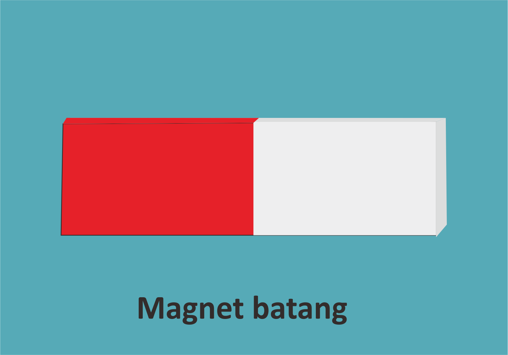
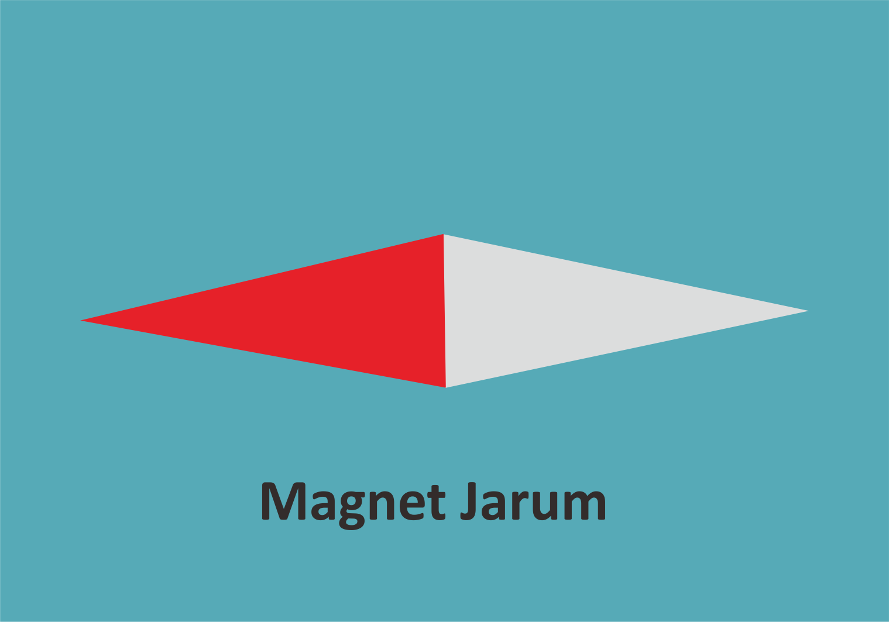
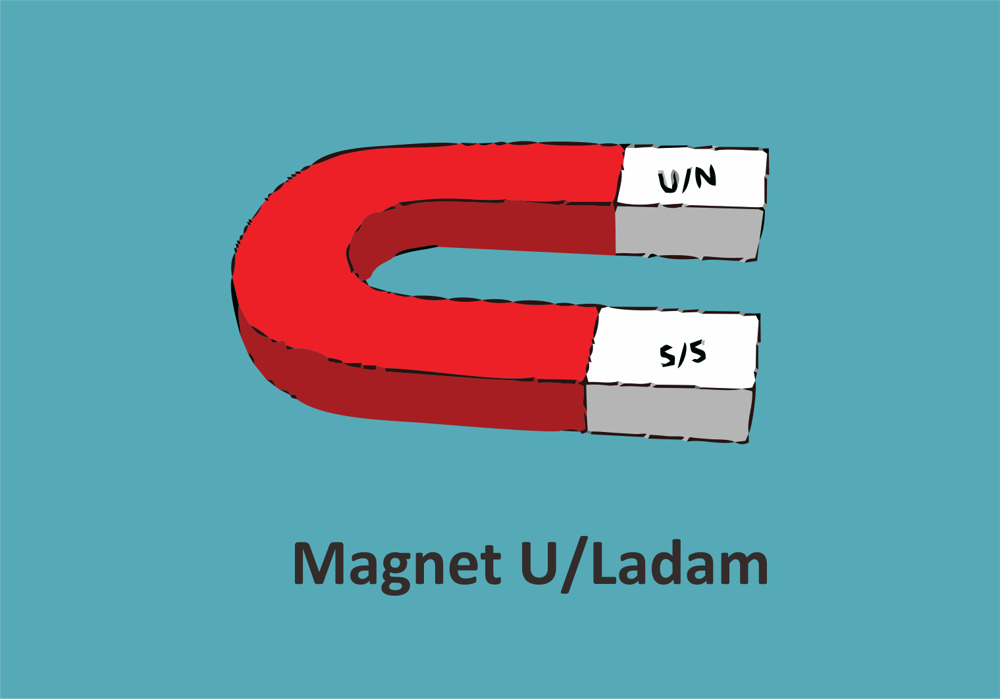
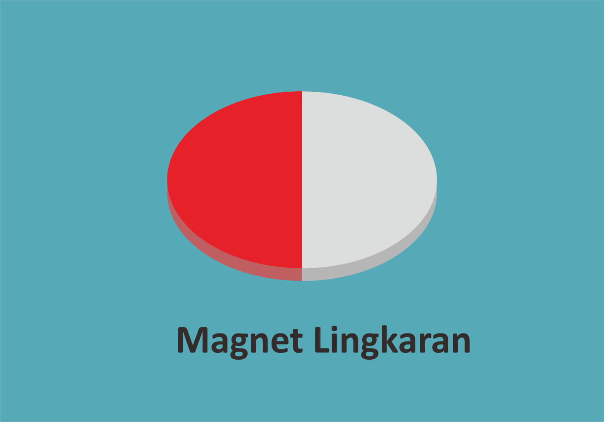
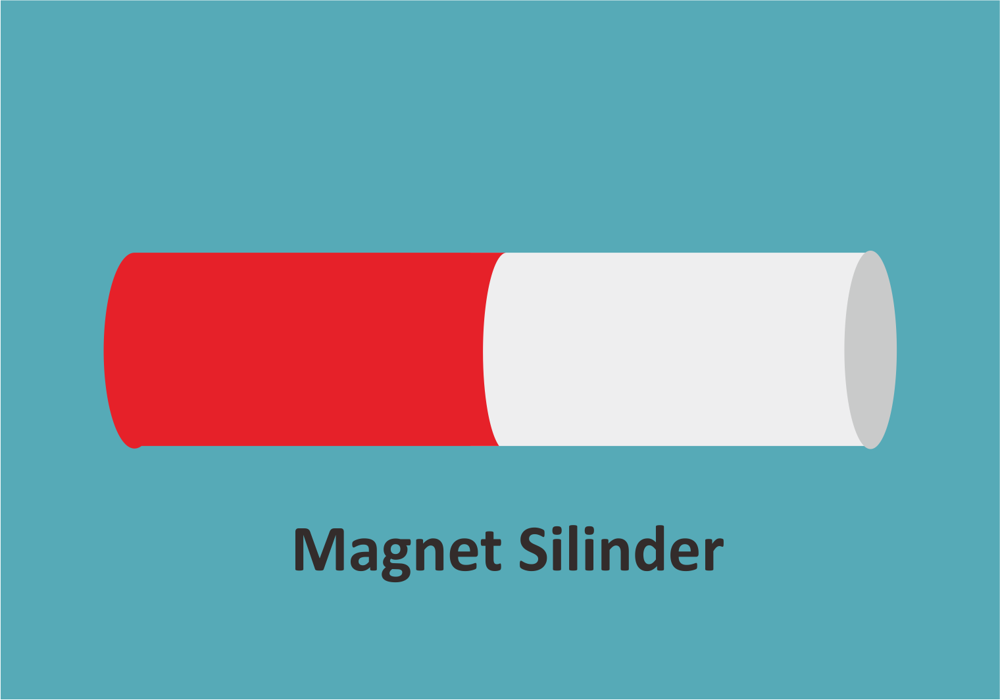

Tujuan
1. Peserta didik mampu menerapkan konsep kemagnetan dan induksi elektromagnetik.
2. Peserta didik mampu membuat karya sederhana yang memanfaatkan prinsip elektromagnetik.
Sebelumnya kita sudah mempelajari tentang magnet bumi yang sangat bermanfaat pada migrasi hewan yang digunakan sebagai petunjuk arah. Selain magnet bumi, magnet juga dapat dijumpai dalam bentuk logam. Karena secara umum magnet dibagi menjadi dua, yaitu magnet alam dan magnet buatan. magnet juga sangat berguna bagi kehidupan sehari-hari kita. Banyak produk-produk elektronik yang memanfaatkan magnet dalam pengembangannya. Ternyata magnet juga dapat kita buat sendiri, ada beberapa cara membuat magnet yang bisa kita gunakan. Untuk mengetahuinya pelajarilah materi pada sub bab ini dengan penuh semangat.
    

Mari Mengamati
1. Amatilah cara menentukan kutub utara dan selatan dari sebuah magnet.
2. Amatilah dengan seksama apabila dua buah magnet dengan kutub sejenis dan tidak sejenis didekatkan.
Video 2. Menguji sifat kutub-kutub magnet

Mari Mencoba
Petunjuk :
- Soal berjumlah tiga yang terdiri dari gambar dan dua pilihan jawaban.
- Pada saat jawaban dipilih, hasil benar atau salah akan langsung terlihat.


Kesimpulan